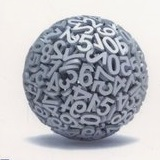
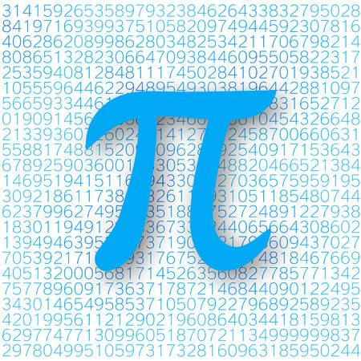

PRZYDATNE MATERIAŁY

Zastosowanie pierwszych metod numerycznych datuje się na 1650 r. p. n. e., gdzie na Papirusie Rhinda oszacowano wartość pi na 44/34, czyli około 3,16. Obecnie mimo tysięcy lat postępu jedyną możliwością poznania pi jest jej przybliżanie metodami numerycznymi, ze względu na samą naturę liczby. Wykorzystując złożone obliczenia analityczne i potężną moc komputerów w 2016 roku przybliżono ją do 22,5 biliona miejsc po przecinku.
 Rozwój metod numerycznych przyspieszył wraz ze skonstruowaniem komputerów elektronicznych. Już wcześniej wykorzystywano różnorodne maszyny lub przyrządy do liczenia (liczydła, czy komputery mechaniczne z XIX wieku), lecz to elektronika jest dzisiaj podstawowym narzędziem pracy w tej dziedzinie. Jeden z pierwszych komputerów, ENIAC, już w 1943 obliczał trajektorie pocisków balistycznych aby pomóc niedoświadczonym oficerom na froncie. Sprzęt pomagał również w prognozowaniu pogody, czy badaniu liczb losowych.
Rozwój metod numerycznych przyspieszył wraz ze skonstruowaniem komputerów elektronicznych. Już wcześniej wykorzystywano różnorodne maszyny lub przyrządy do liczenia (liczydła, czy komputery mechaniczne z XIX wieku), lecz to elektronika jest dzisiaj podstawowym narzędziem pracy w tej dziedzinie. Jeden z pierwszych komputerów, ENIAC, już w 1943 obliczał trajektorie pocisków balistycznych aby pomóc niedoświadczonym oficerom na froncie. Sprzęt pomagał również w prognozowaniu pogody, czy badaniu liczb losowych.
Współcześnie komputery osobiste o mocy niewyobrażalnie większej ich poprzedników i tym samym prędkości niedoścignionej przez człowieka są codziennością, jednak wiedza o tym jak działają – już nie.